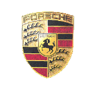

Porsche łopis
Porsche AG– niemieckie przedsiębiorstwo produkujące obecnie samochody sportowe oraz luksusowe samochody osobowe, założone w 1931 roku przez Ferdinanda Porsche. Właścicielem spółki jest koncern Volkswagen AG. Siedziba przedsiębiorstwa znajduje się w Stuttgart-Zuffenhausen.W 2014 roku Porsche wyprodukowała 203 097 samochodów, z czego największy udział przypadł modelowi Cayenne (prawie 66 tys. pojazdów) oraz Macan (ponad 59 tys.).
Porsche historia
25 kwietnia 1931 roku Ferdinand Porsche założył firmę początkowo konstruującą samochody, a następnie z nakazu Adolfa Hitlera pojazdy wojskowe i pancerne dla III Rzeszy w czasie II wojny światowej konkurując z firmą Henschel.Logo firmy Porsche, w kształcie herbu, które pozostało niezmienione do czasów współczesnych, w centralnej części ma umieszczonego biegnącego konia, który został zapożyczony z herbu miasta Stuttgart, w którym mieści się przedsiębiorstwo[2].W 1947 roku przedsiębiorstwo przejął syn Ferdinanda – Ferry Porsche. Pierwszy model Porsche 356 z roku 1948 zawierał wiele części z Volkswagena Garbusa, w tym silnik (chłodzony powietrzem 4-cylindrowy boxer) oraz amortyzatory. Autorem projektu nadwozia był Erwin Komenda, który już poprzednio zaprojektował wygląd VW Garbusa. Model 356 w toku produkcji był modernizowany, wiele części Volkswagena zastąpiono własnymi konstrukcjami. Ostatnie wersje modelu 356 miały silnik własnej konstrukcji firmy Porsche.W 1963 roku zaprezentowano model Porsche 911. Był to wóz sportowy z sześciocylindrowym silnikiem własnej konstrukcji umieszczonym z tyłu. To auto stało się światowym przebojem firmy Porsche, osiągając sukcesy nie tylko na torze wyścigowym, lecz przede wszystkim w sprzedaży.W połowie lat 70 XX wieku powstała koncepcja stworzenia podziału na małe modele czterocylindrowe, średnie sześciocylindrowe i duże z silnikiem o ośmiu cylindrach. Mały model 924 pojawił się w 1976 roku a rok później duży 928. Polityka ta była kontynuowana aż do roku 1995, kiedy to po trzech latach zakończono produkcję Porsche 968 m.in. ze względu na niewielki popyt. Samochód poza stylistyką przypominającą Porsche 944 krytykowano za małą liczbę cylindrów. 